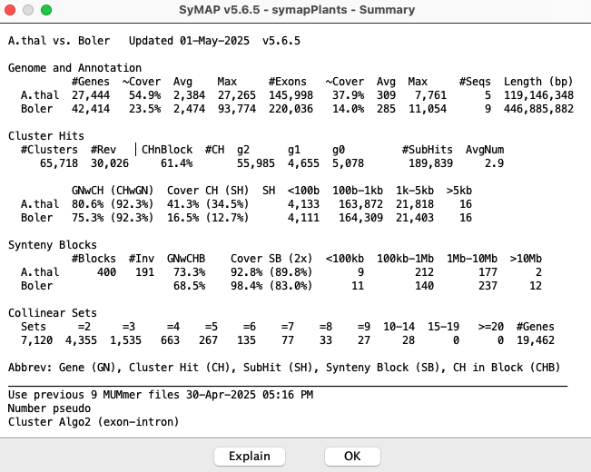
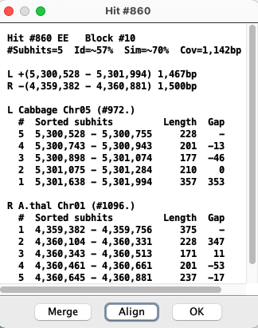

| Hit %Identity
| Show all hits that have >N% identity, where the %Identity is from the MUMmer anchor file.
The label on the left starts at the lowest %Id in the plot (in this case %33).
| | Dot Sizea
| Increase the size of the dots in the plot.
| | Scale dot by hita
|
Length The dot is a rectangle relative to the hit's length.
%Id The dot is scaled by the hit's %Id (Identity).
None All dots are the same size.
| | Block Hits
| Color the block dots Black, Blue or Green.
| | Show Hits
|
All Show all hits.
Mix Show all hits, but non-blocks hits will be displayed with size=1 and no scale.
Block Show only show hits assigned to blocks.
| | Show Blocks
| Draw a blue rectangle around each block of hits.
| | Show Block Numbers
| Draw the block number in or near the block; this only works when Show Blocks is also checked.
This works best on the cell view.
|
a These options can make the dots flow over the borders, see DotPlot Filtered Display.
b The SyMAP hit loading algorithm removes
some repetitive hits from the raw anchor set, so some hits from the MUMmer files will not be shown.
Show Empty Regions (Not shown in above image) This option is only present
if at least one of the genomes displayed has >=20 chromosomes or scaffolds; this is most relevant
when one genome is draft sequence, as there can be rows or columns with no blocks.
When the option is deselected, it hides rows or columns that do not contain any synteny blocks.
DotPlot Filtered Display
|
When the dots are all the same size and are scaled to 1, they fit inside or on their respective block. However,
when they are changed to rectangles or their sizes increase, they can overlap the border of their block. In this
case, the Block Hits Blue make the block hits clear.
This is illustrated on the right, where the filters are set the Length, Dot Size=3, and
Blue Block Hits. Some of the blue block hits are on the border of the block blue box.
|
|
The image below shows the block display for B.rapa and Cabbage.
The 10 B.rapa chromosomes are color coded as shown at the top, and aligned to
the 9 Cabbage chromosomes. The Cabbage to B.rapa block view can be viewed by
selecting reverse.

| Clicking a chromosome displays a window of the chromosome as shown below; the dotted border
indicates an inverted block (i.e. the majority of hits are inverted). Clicking
a block displays its 2D view.

|
The Explain button on this view explains the different columns.

Displays for All Projects
From the Project Manager, select two or more projects, which will
activate the "Chromosome Explorer" and "Dotplot" buttons.
The Explorer is a two-panel display in which the left panel is used to select specific chromosomes, while the right panel
shows the synteny for the selected chromosomes.
Below is a snapshot of the Explorer showing the circle, which is the initial view.

Left panel: The left panel controls which species and chromosomes are shown:
- Click a chromosome rectangle to add it to the display in the right panel. Click it again to remove
it.
- Click the chromosome number above a chromosome to make it the reference. (The
choice of reference sequence does not matter for the circle view,
but it is important for the 2D and Dot Plot views; see below).
- Adding and removing chromosomes affects the Circle view instantly.
To add/remove from the 2D or Dot Plot
views, open the Circle view, make the change, and then re-open the 2D or Dot Plot.
Informations: As the mouse moves over various
components, instructions or information for that component are shown in the Information box.
Views: The buttons in the lower-left corner of the window change the synteny view in the right panel.
Download Blocks: Exports a table of all of the synteny block coordinates for the selected species; see also Data Download.
Click the minus (-) button next to a project name or the Information box,
and that section will be hidden;
the minus sign will change to a plus.
Click the plus (+) button to show the project or Information box.
Right panel:
The right panel shows the synteny display for the species and chromosomes selected on the left.
The three view for the right panel are
Circ,
2D and
Dotplot.
The first two views are
essentially overviews, while the 2D view allows zooming in to details, all the way
to the basepair level if desired.
Each right-panel display format has its own controls; see the individual sections for details.
Circle Display #2 (Multi-chromosome)
| Go to top |
This view is illustrated in the above Chromosome Explorer image.
All features are described in the first circle section,
except it is chromosome-based instead of genome-based.
Dot Plot #2 (Multi-chromosome)
All features are described in the first dot plot section,
except that it is chromosome-based instead of genome-based.
Selecting a chromosome pair (cell) from the image on the left will replace it with the dotplot for the cell
on the right. Clicking on a synteny block (or selected region) brings up the 2D view shown furthest right below.
Full display
The 2D display is activated from the Explorer by
clicking the 2D button (or by selecting a region or block from a dot plot).
Below is an image depicting an alignment from A.thal Chr4 to Cabbage Chr1 to B.rapa Chr2.
Note that Cabbage Chr1 is the reference
chromosome, hence is placed in between the others.
Each chromosome is drawn as a light-blue rectangle, called tracks.
The sequence length is shown at the bottom of a track; the coordinates are displayed on the side.
If the sequence has been flipped (i.e. A.thal Chr4), its sequence length is shown at the top of the track.
|
The gene annotations (if exists) are drawn down the middle of the rectangle in dark-blue (positive strand)
and purple (negative strand). Overlapping genes are horizontally staggered.
The hits are the lines between tracks, referred to hit wires, which connect the hit region
on each sequence.
Hit wires colored brown align to the same strand on both sequences (i.e. ++,--) and light forest-green
align to different strands (i.e. +-, -+).
The colors can be changed using the Color Icon in the upper right (see Color Icon).
More details on gene and hit display are provided in the section below.
|

|
The tracks and hits can be filtered; see
Sequence Filter and Hit Filter.
Annotations: Annotation data of the following types may be loaded into SyMAP and displayed.
| Annotation Type | Display
| | Gaps | Red band across the chromosome
| | Centromere | Blue "X" across the chromosome
| | Predicted genes and exons
| Annotation strip in center of chromosome, as described above.
|
The display colors can be changed using the Color Icon in the upper right; see Controls.
The example below was derived from a two chromosome display of A.thal Chr4 and Cabbage Chr1. The region
was displayed by right-clicking
near the top of the chromosome, dragging the mouse and releasing it in order to view the selected region.
The Sequence Filter was set to display Annotations.
|
Gene annotations: The introns are shown as thinner black rectangles. The exons are drawn as thicker rectangles,
colored dark blue (positive strand) or purple (negative strand).
A solid thick bar indicates the absence of introns in the annotation.
The staggered genes, where one is
further out then the other, indicate overlapping and contained genes; they have the same gene# with a different suffix.
There can only be 3 layers (the image on the right has 2 layers) of overlapping genes, so if there is more than that, then
they may not be distinguishable and you will need to set the Annotation filter to determine the distinct genes.
|

|
Hits: The brown or green hit wires connects two regions on the two sequences. Hit lengths show the
length of the hit located on the track at the end of a hit wire (i.e. the green and gray
vertical line near the chromosome edge).
Clustered hits are multiple hits clustered together with gaps in between, where the gaps are represented by
a grey area. (The hits in a cluster are referred to as sub-hits).
Hit Information: Hovering the mouse over a hit wire will show its information in the Information box.
- Block # is the block number (0 indicates it is not in a block).
- Inv indicates that it is part of an inverted block.
- Hit # is the number representing the hit for the chromosome pair.
- (!=) indicates the hit ends are on two different strands; (=) indicates the same strand.
- gN (N={0,1,2}) indicates that the hit overlaps an exon on one side, or two sides
or none.
- cN.M (N≥0) indicates that it is part of a collinear set of size N;
M is the unique set number for the chromosome pair.
The collinear sets can be queried using Queries.
|

|
Gene Information: Hovering the mouse over a gene will show its information in the Information box.
- Gene # is a sequential number along the chromosome. If genes overlap, they will have the same number
but a different suffix (e.g. a, b,...).
- #Exon= is the number of exons followed by their summed sizes.
- The next line is the location followed by its total length.
- The following lines are the annotation provided by the GFF file.
- The last line is the exon that the mouse is over.
|

|
More detailed information: Popups of a gene or hit wire provides more detailed information.
To view the popup of the gene description, right-click on the gene in the track.
To view the popup of a hit wire, right click on it (the hit wire must be highlighted in red from hovering over it to be clickable).
The information in a popup can be copied by dragging the mouse over it followed by the copy command. The popup does not
go away until the OK button is selected, or the Explorer is exited. Any number of gene popups can be present.
The example below shows the two genes that are connected by the hit wire shown. For the hit information,
the '#' column in Track #1 and Track #2 align (i.e. the #2 of Track #1 aligns with #2 of Track #2); the coords are always sorted by the start coordinate.

Caveats:
- As shown in the gene popup, the hit(s) are listed; however, only displayed hits for the gene are shown; i.e.
there could be a hit to the gene where the other end is not shown due to zooming or filtering.
- If there are more than two tracks shown, the gene popup will only show the hits to the track on the right. However,
clicking the hit wire between the first two tracks will show the hit information.
History (Home, <, >) SyMAP retains a record of the prior views (like a web browser).
The history navigation back (<) and
forward (>) buttons allow you to
move back and forth through the previous views.
The Home Icon button returns to the initial view.
Zoom Buttons (-, +)
The zoom buttons allow for quickly expanding and narrowing the view region.
The minus (-) button shrinks the view region by 50%, keeping
the same center, while the plus (+) button doubles the view region,
again keeping the same center.
Scale Icon Button
The Scale button
(right of +) resizes the tracks so that they are in the same scale
(base pairs per pixel) as the reference sequence track in the view.
Selected:
This drop-down selector assigns a function to the mouse's left button
click and drag actions:
| Zoom All Tracks | Zoom the track to the selected region and all other tracks with hits in the region.
| | Zoom Selected Track | Zoom to the selected region on the selected track; all other tracks do not change.
| | Align (Max 30000) |
Open the base alignment view for the selected region (see Base View).
No more than 30000 bases can be selected. There MUST be hits in the region to align.
| | Show Seq Options |
A sequence must first be selected, then a popup menu will have the options:
| Hit | Show the sequences of the clustered sub-hits; if the hit is on the negative strand, it will be reverse
complemented (RC).
| | Reverse Hit | Show the sequences of the sub-hits; however, RC the sequences if the hit was on a positive strand,
and do not RC if the hit is on the negative strand.
| | Full Hit | Show the sequence from the start of the first cluster sub-hit to the end of the last cluster sub-hit (this is
not relevant if there are no clustered hits).
| | Region | Show the sequence from the region selected.
|
|
Print, ? Icons see Help and Print.
Color Icon
Opens a menu for customizing colors, as shown below.
- Click a tab (e.g. Hit) to view the associated colors.
- Click a color box and a color chooser will popup
that lets you change the color; the change will be saved for subsequent SyMAP sessions.
- Ok: Instantiate all changes and close the menu.
- Cancel: Cancel any changes and close the menu.
- Default: For the selected tab, changes all colors back to the default colors.
Additional navigation:
| Resize Track |
Drag bottom of track |
Position mouse at bottom of track (resize cursor appears), hold down left
mouse button, and move mouse. |
| Scroll Track |
Mouse wheel |
Position mouse over track and use mouse wheel to scroll up/down the track.
Position mouse in the hit space to scroll up/down both tracks.
|
| Filter |
Right mouse button |
Position mouse over track or white space between tracks, and click right mouse button. |
Select Sequence Filter button above the sequence track to change the display for the
respective chromosome. If the sequence track does not have a given annotation (e.g. Gaps), then that item
will be un-selectable.
Start and End
The positions of the sequence display can be set via the corresponding text boxes.
The units of the values entered can be selected from the accompanying drop down menus
(BP, KB, MB, GB).
|
Full Sequence Sets the start and end positions of
the sequence display to encompass the whole chromosome.
Flip Reverses the orientation of the sequence track.
Show Genes Enables/disables the display of gene/exon annotations along the sequence.
Show Gene Delimiter When the zoom is close enough to view the exons, a black line will
be drawn over the top end of each gene. This helps delimit genes that do not overlap (so are not staggered),
but are close enough to appear one gene (see example below).
Show Annotation Enables/disables the display of the annotation descriptions along the
right side of sequence. NOTE: this only works if you are zoomed in close enough that they can clearly
be displayed.
Show Gaps Enables/disables the display of sequence gaps (drawn as solid red
rectangles) along the sequence.
Show Centromere Enables/disables the display of the centromere (drawn as a cyan "X") on the sequence.
|

|
Show Ruler Enables/disables the display of the sequence ruler along the right side
of the sequence.
Show Hit Length Enables/disables the display of the hit length line along the
inner boundary of the sequence. The hit length line denotes the start and end points of the hits relative
to the sequence (may not be visible for tiny hits).
Show Hit %Id Line Enables/disables the display of the %Id line next to each hit along the
sequence. The length of the line represents the magnitude of the % Identity value for
the hit.
Show: The first two will show their value along the edge of the sequence track.
| Hit %Id Value | The score value corresponds to the % Identity value for the hit from the MUMmer anchor file.
| | Hit# | The hit number is shown.
| | Neither | Nothing is shown (default).
|
A subset of the filters are available by right
clicking in the light blue area of the chromosome rectangle.
The Hit Filter menu allows the user to select which types of hits are displayed.
Multiple Show options can be selected, but only one Highlight.
| Show or Highlight
| | Synteny Blocks | Hits that are part of a synteny block.
| | Collinear Sets | Hits that are part of a collinear set. See example below
and Details.
| | Hit =2 Genes* | Hits that intersects a gene annotation on both sides.
| | Hit =1 Genes* | Hits that intersects a gene annotation on one side only.
| | Hit =0 Genes* | Hits that not intersect any gene.
| | Identity
| | N% | Move the slider to view only the hits with >= the specified identity. This works in
conjunction with any of the Show options.
|
|

|
* These correspond to the Hit Hover of g2, g1, g0, respectively.
When blocks or collinear sets are highlighted, subsequent blocks/sets will have an alternating color relative
to one chromosome of the pair.
A subset of the highlight filters are available by right clicking in the hit white space.
| The image on the right has the Sequence Filter option of Show Gene Delimiter
and the Hit Filter option of Highlight Collinear Hits.
Show Gene Delimiter: Note that the 2nd gene on both tracks would blends in with the 3rd if it was not for the black line at the
top.
Highlight Collinear Hits: The highlighted hit wires are all part of a collinear set. The 2nd hit wire is not highlighted because it
does not hit a gene pair, so is not part of the collinear set, but it does not disrupt the set since it does
not hit an annotated gene.
|

|
Select Align (Max 30000bp) from the Selected: drop-down, then select a region of maximum 30kb,
which must have hits.
To select a region, drag the
mouse along the sequence and release when the desired range is highlighted.

The aligned base view of the hits will
appears in a new window. This view consists of a ruler along the top showing the area
of the sequence covered, the hits, and the genes.
Hits
Hits (and sub-hits) are displayed as lines, where red horizontal lines are mismatches,
forest green is deletion and a downward arrow is insertion.
When two hits overlap, one will be shown above the other.
Clicking on a hit line brings up the its base alignment view in the bottom of the dialog; if the input genome
sequence was soft-masked, the masking is retained in the alignment.
For details of alignment, see Alignment.
Genes
Annotated genes are displayed below the hits. The system attempts to expand the view to show the full gene that has
hits. Genes that overlap this gene will be partially shown.
Align Text View

Hover over a hit-wire and right click for the information popup shown above. The Align Hit
option aligns the hit as shown on the right. Use the Reverse button to view the reverse complement
alignment.
|

|
For details of alignment, see Alignment.
Alternative base views
To view the base alignment, use the Show Seq Option (from the Selected: pulldown).
Select the 1st region to be aligned, then select the 2nd region. These two sequences can be copied
from the popups, and aligned with online tools such as
EMBOSS Matcher
or EZ BioCloud (max 5000bp).
Another alternative is to find the hit in the Queries, then view the MUSCLE MSA.
All selected projects will be shown in the Dot Plot. The interface is the same as
discussed in Dot Plot (Two Genome). The dot plot in the image
shows three genomes.

To open the query interface, first select two or more sequence projects in the Project Manager.
Then select the Queries button to open the interface, then select Query Setup.

Set up the query and then select Run Search to execute it.
When the query is complete, the Query Results page opens showing the table of results:

See Queries Details for further information.
Self-synteny can be viewed in all views
(see Demo Dot Plot), with the following exception:
The 2D does not work for a single chromosome compared
to itself. However, by going through the dotplot or blocks view, you can click on a self-chromosome block and view it in
the 2D view.
The Queries does not work for self-synteny.
Data Download
There are two ways to download data for SyMAP synteny blocks, individual hit anchors, and annotations:
- Explorer: Select the species of interest,
open the Explorer, and click the Download Blocks button is at the lower left.
This exports a table of all the computed synteny block coordinates for all the
selected species, including their self-alignments, if those were computed.
The columns are:
Species1 Species2 Chr1 Chr2 BlkNum Start1 End1 Start2 End2 #Hits Genes1 %Genes1 Genes2 %Genes2 PearsonR
The Genes1 column is the number of genes from Species1 in the block and %Genes1
is the percentage of genes that have a hit.
The PearsonR is the is the approximate linearity of the hits in the chain as measured
by the Pearson correlation coefficient; a negative PCC is an inverted block.
- Queries: The results of a query are shown in a table,
which can be exported as a CSV file. Whatever column that have been selected will
be written to the file.
Most displays shown have a  set of icons. set of icons.
The left icon is for printing the image. If this does not provide the view you want,
use the system "Screen Capture" (all the images in this
document were created with screen capture, along with the images in the SyMAP publications).
The right icon (?) brings up this web page, typically to the correct section (obviously, there needs
to be an internet connection).
The 3D display is obsolete, but if there is a "3D" button on your display, see 3D.
Go to top
|


{kind=link}
{kind=link}
{kind=link}
{kind=link}
{kind=link}
{kind=link}
{kind=link}
{kind=link}